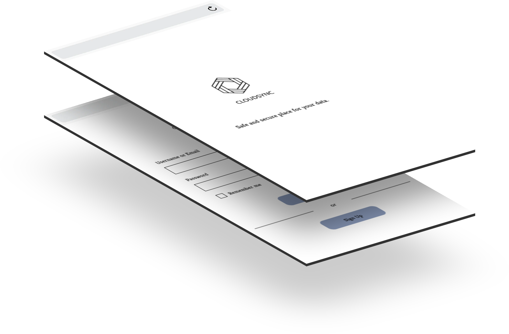
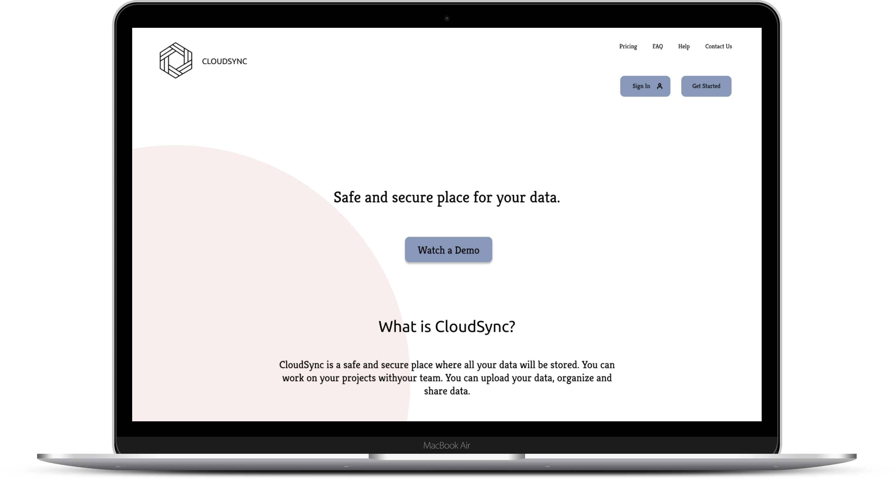
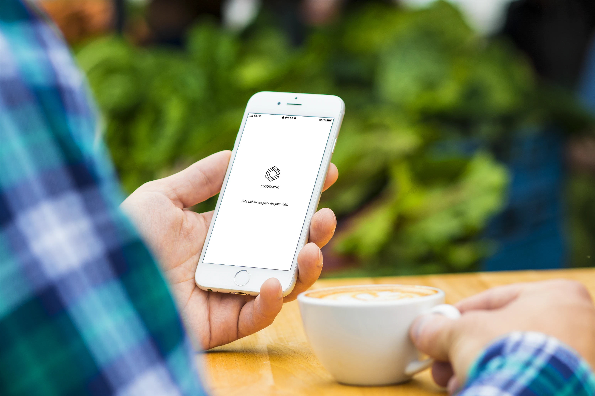
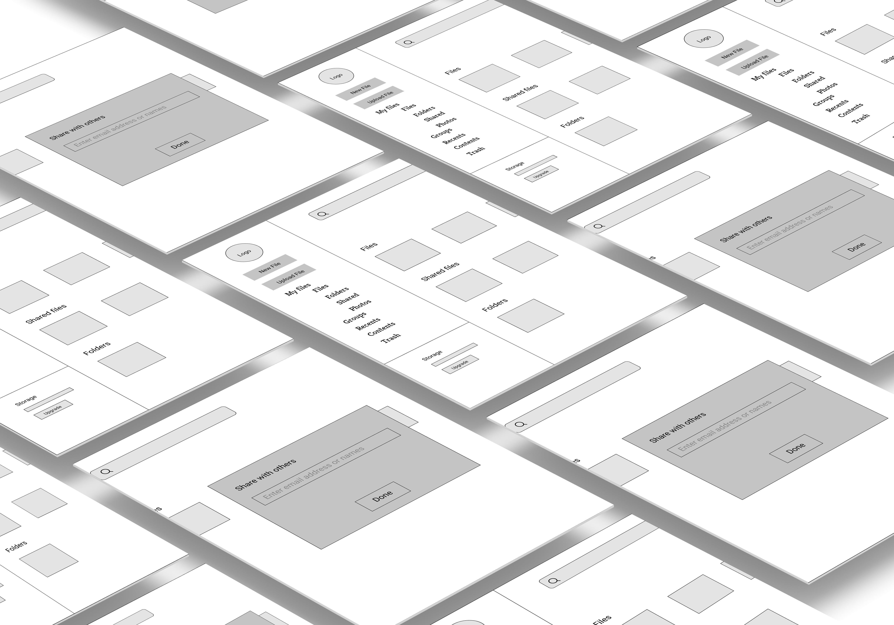
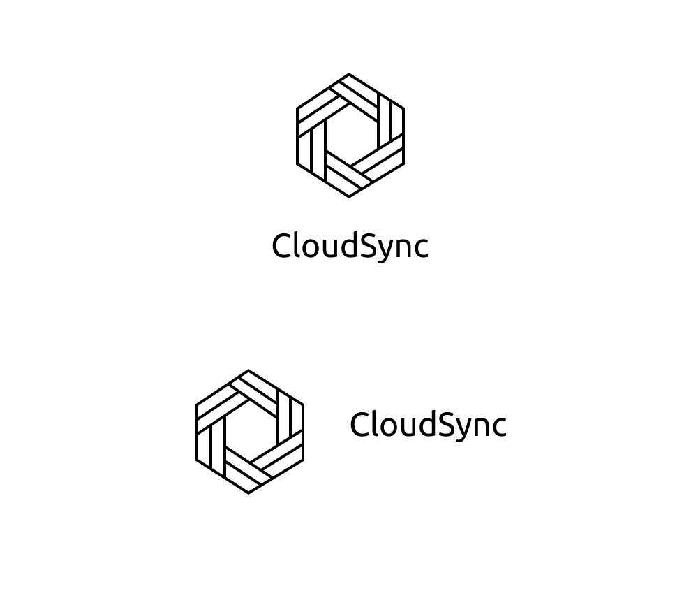
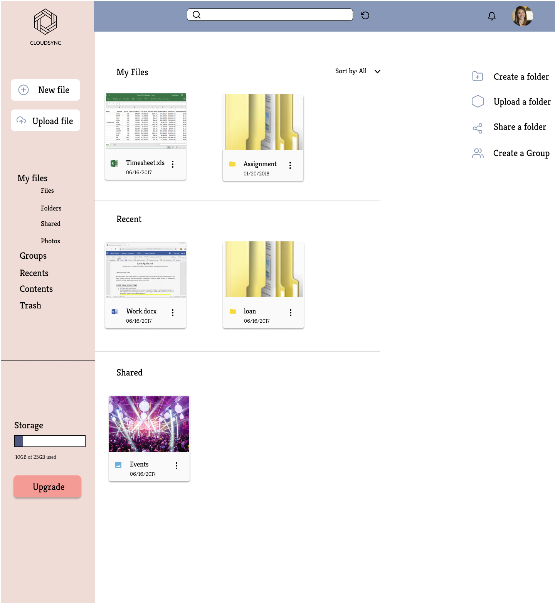

CloudSync is a cloud storage application that stores users data securely. The product can Sync, upload, and share your files real-time on the cloud.
View Desktop Prototype

Problem/Solution
In a time where data is multiplying exponentially we are in need of more options to store it. We have cloud services provided by major corporations, but there is still room to play. Surprisingly, users are looking for something more simplistic. They wanted syncing to be flawless so only one application is needed to manage opposed to several. The majority of users save their life moments and other important documents within the cloud. CloudSync is a cloud application that allows seamless syncing to access information whether by phone or desktop. It also promotes easy sharing of life moments or important documents in a fast way without sacrificing its simplicity.

- Design Roles
- UX Research
- Information Architecture
- Branding
- Visual Design
- Prototyping
- Testing
- Design Deliverables
- User Surveys
- User Testing
- Personas
- Competitive Analysis
- Mobile Sitemap
- User Stories & Flows
- Wireframes
- Mid-fidelity Wireframes
- Visual Design
- High-fidelity Prototype
- Tools & Software
- Figma
- Whimsical
- Illustrator
- Survey
- Usabilityhub.com
Discovery and Research
87% use cloud service for personal use.
95% use cloud service for work related endeavors.
88% use more than one cloud service applications.
82% take backup of digital files regularly.
73% upload images and word/pdfs/excel documents.
With this information I geared CloudSync toward professionals. Since the majority of individuals used cloud services for personal and professional use I geared this to be work and family oriented. There still needed to be a way to aim it toward more personal and family/friends related information too so finding the right vibe proved itself difficult.
I also looked for particular ways to mimic Dropbox in it’s design to help the user feel more at ease. I wanted the user to feel CloudSync was familiar, yet still dealing with a totally different application with different features.
I also knew to compete with larger companies I needed to provide larger storage for cheaper pricing since the majority of users were uploading files and photos.
User Personas
To gain a deeper understanding of my potential users, I interviewed them as they talked about their goals and frustrations. Not only did I confirm some of the survey results, but I also discovered that this pool of audience heavily values user-friendly designs — to the point where they determine whether to keep using an app or not within the first few minutes of the product experience.
Throughout the project, I continuously referred back to these personas to guide design decisions and priorities and to ensure that I was always thinking from their shoes, addressing their goals and frustrations.

Competitive Analysis
To see where CloudSync would stand in the market, I researched 3 other cloud service products (Google Drive, Dropbox, and iCloud), registered an account for each, and analyzed how CloudSync would differentiate itself. I also found that the onboarding process for 2 out of the 3 I researched were quite extensive. If simplicity were key in using this app and having it perform well as an MVP then I knew I needed to make it a quick and easy onboarding experience as well. This definitely influenced the login process by simply providing a username and email.


The Strategy
Information Architecture, User Stories, User Flows
With the product concept and personas in mind, I began constructing the mobile sitemap,
which laid the foundation and structure of CloudSync. Followed by listing out all possible
actions that
make the MVP a truly user-friendly, time-saving, intuitive, and functional mobile app, I was
able to prioritize
and eliminate user stories while spotting issues in user flows and functionalities.
For
me, this part
of the process reinforced the product concept, scopes, and goals of the app.

Minimum Viable Product (MVP)
- I want to upload a file(s) on the cloud platform
- I want to create a folder(s) on the cloud platform
- I want to share files or photos
- I want to save content on the cloud platform
- I want to rename a file(s)
- I want to invite people to work on a file with me

Sharing a file User Flow

Uploading a file User Flow

Adding a new file User Flow

Uploading a folder User Flow

Wireframe
Then onto designing my first sketch on the design concept.
Overall I already had an initial thought of what I believed the web app should look like so as I sketched out these screens overall I designed a wireframe digitally as well in order to put them in front of the user to test out. First I created the wireframe digitally then I designed a low-fidelity mockup.


After tweaking and adjusting, I brought the wireframes to life in Figma by creating high fidelity digital versions of the wireframes for testing purposes in order to identify if there are any complications with the UX.
Branding and Style Guide
Logo Design
The CloudSync logo is minimal symbol design with the cloud storage concept. This powerful symbol represents the file storage experience.

Color Palette
I wanted to achieve a feeling of professionalism, but also wanted the product to feel motivating and friendly, which is why CloudSync makes use of Light blue as primary color and peach, and dark orange as a secondary colors. Light blue represent creativity and activity to make users feel energized and excited.
Typography
ubuntuis an Open type based font family, designed to be a modern, humanist style typeface. Ubuntu is a representative of the aesthetics, very simple and universal. It has the appearance of efficiency and forwardness in the design. It allows us to emphasize the voices on CloudSync.
View StyleguideThe Refinement
Usability tests and metrics revealed that some of the process and design decisions I made were not as intuitive as I thought. Referring back to the personas, I knew that users heavily value a user-friendly product and would like to minimize the time spent on understanding it. As a result, I needed to iterate, test, and achieve measurable outcomes to overcome these product shortcomings.

100% (12/12) users are available to find the sign up or sign in button.
Challenge #2 - Add file(s) and Upload file(s)
Feedback
- When I asked for “adding new files” task, users are mostly confused and doesn’t know which button to click.
Iteration
- Changed the “Upload” button and “New“ button

initial design
iteration

iteration
iteration
The Prototype

Conclusion
Overall, this experience was incredible. Going into the project with the client not knowing a lot of their target audience or important functionalities gave me encouragement to see UX/UI design is not something to skip if you want a truly successful app.
Initially I was a bit nervous to start a project where the client essentially said, “Here is what we think we want, but we need you to confirm this is the right direction”.
I was absolutely blown away by what I learned from users using cloud service platforms.
Some of the things that surprised me was that the majority of people were not stingy when it came to purchasing a cloud application. If that meant that their files were safe, secure, and they had plenty of space to store data then they were willing to pay a premium. In fact I believe this had some correlation with the fact that the majority of users used their cloud services for personal use and that in large, video was the main data type to save. Again, this was because of personal memories or experiences from follow-up.
This also leads to the other point that surprised me is that the majority of users did not use a cloud service in order to store business documents or use it for work, but for personal use.
They wanted a laptop/mobile app that synced perfectly. This is because they wanted control of when, where, and how they were going to organize or share their data. Work was still important but it was not the primary priority it was second.
If I were to go back and improve on my workflow it would have to be putting the research more in front of me.
Although I did use my research throughout I know there could have been tiny tweaks to the design to accommodate small preferences or produce a tighter MVP. If I had more time I would have loved to put a more full fledged prototype with animations that could draw the persons/users attention at a much greater level and create a more “real” experience.
Creating CloudSync was a blast and I was grateful to have taken part in this particular project!